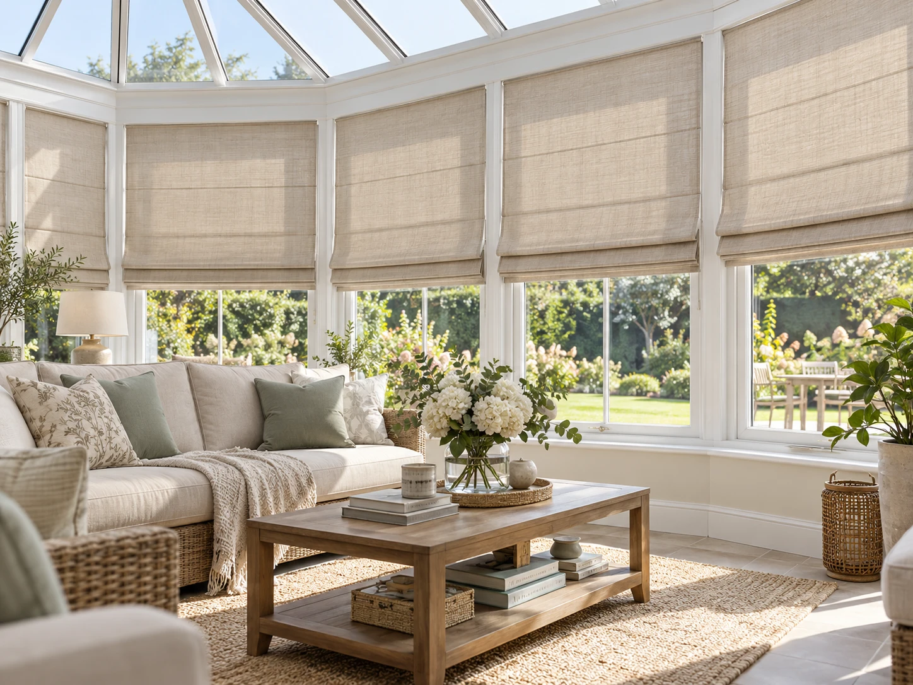
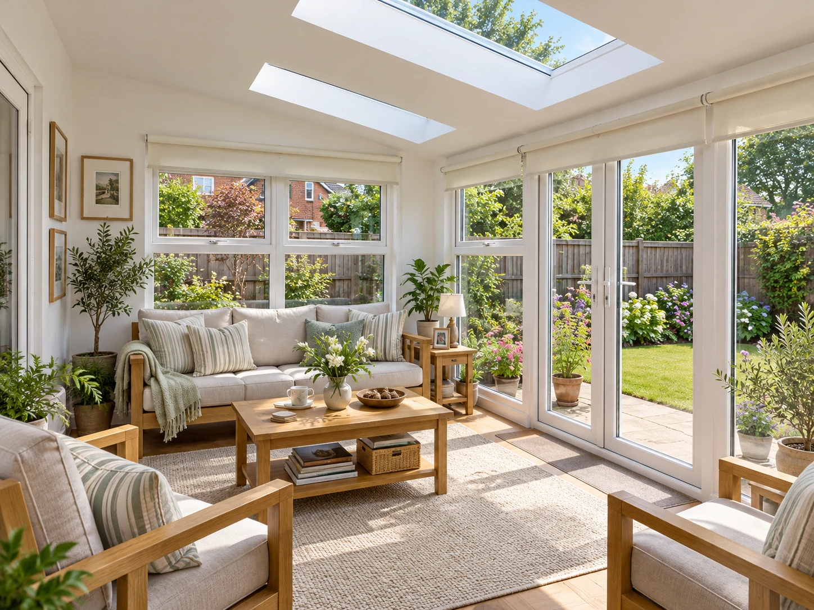

Conservatory Blinds,
made to measure.
Pleated and roof-pitch blinds, cut and fitted to the exact angles of your glazing bars — keeping a conservatory, orangery or garden room cool in summer, warmer in winter and glare-free all year round. Measured and fitted by hand, free of charge, across Braintree and surrounding areas.
- Free measuring & fitting
- Fits any roof pitch or shape
- Child-safety compliant

Built for glass on every side.
A conservatory, orangery or garden room has glazing overhead as well as all around you, so it catches far more sun than an ordinary room — which means more heat, more glare, and furniture and flooring that can fade faster than anywhere else in the house. An ordinary curtain or roller blind on the wall sections alone won't touch the problem, because most of that sun is coming straight through the roof.
That's why conservatory blinds are their own category. Lightweight pleated fabric runs on a slim poly-cord track that holds its shape on a slope without sagging or billowing, with each panel cut precisely to the spacing of your glazing bars — whether that's a simple lean-to roof, a Victorian or Edwardian bay, or a gable end with awkward angles. The same fabric, or a complementary one, continues down the upright windows and doors, so the whole room is treated as one considered scheme rather than a patchwork of separate blinds.
Fabric choice does real work here too. A solar-reflective or blackout-backed option on the roof panels that catch the most sun cuts a significant amount of heat and UV before it ever reaches the room, while lighter, more decorative fabrics can be reserved for the wall sections where glare matters less. Every panel is controlled independently, so you can shade just the roof on a bright afternoon while leaving the wall blinds open for the view.
Whether you're after the soft, cottage-garden feel of a floral pleat or a calmer, neutral linen look that matches the rest of the house, it's a practical fix that still looks considered — making the room usable all year, not just on mild days.
See them in your own light.
From soft florals to calm neutral linens — a few of the conservatories and garden rooms our blinds work beautifully in.


Comfort, whatever the weather.
A conservatory should be one of the best rooms in the house, not the one you avoid in a heatwave or a cold spell.
Cuts summer heat and glare
Pleated and solar-reflective fabrics across the roof block a large share of direct sun before it reaches the room.
Fits any roof pitch
Every panel is measured and cut to your exact glazing bar spacing — lean-to, Victorian, Edwardian or gable roofs alike.
Keeps the warmth in
An extra layer overhead helps the room hold its heat on cold evenings too, not just block the sun in summer.
Independent control
Roof and wall panels operate separately — by cord, wand or motor — so you shade exactly where you need to.
Matched to your room
A wide fabric range means the roof blinds can coordinate with the wall blinds and the rest of your home.
The details.
Everything gets confirmed against your own roof and windows at the free measuring visit — this is a starting point for what's on offer.
- Roof Fitting
- Pleated poly-cord track, cut to each panel's glazing bar spacing
- Wall & Door Fitting
- Pleated, Roller or Roman options to match the roof
- Fabric
- Plain, patterned, solar-reflective & blackout-backed options
- Control
- Cord, wand or crank, or motorised for hard-to-reach roof panels
- Child Safety
- Cords wrap safely around a fitted safety device, at no extra cost
- Best Suited To
- Conservatories, orangeries, garden rooms & roof lanterns
- Measuring & Fitting
- Free of charge
Conservatory Blinds, answered.
The questions homeowners usually ask before choosing conservatory blinds. Can't see yours? Get in touch and we'll answer it directly.
Yes. A conservatory roof lets in far more direct sun than a normal window, so a pleated or solar-reflective fabric across the roof panels blocks a large share of that heat and glare before it reaches the room. Fitted alongside blinds on the upright glazing, the whole room stays noticeably cooler and more comfortable.
Yes. Pleated conservatory blinds run on a lightweight poly-cord track that we measure and fit panel by panel between your glazing bars, so lean-to, Victorian, Edwardian and gable-ended roofs are all catered for — along with hip-ends and awkward angles.
A solar-reflective or blackout-backed fabric on the roof panels that get the most direct sun will cut UV significantly, helping protect furniture, flooring and fabrics from fading. We can bring samples suited to your conservatory's aspect at the free home visit.
Yes. Each panel is controlled independently — by cord, wand or motor — so you can shade just the roof while keeping the wall blinds open, or any combination that suits the light at the time.
Most conservatory orders are made and fitted within two to three weeks of your free measuring visit, depending on the number of panels and the fabric you choose.
Need blinds for the rest of the house too? Take a look at our Roller Blinds.
View Roller BlindsLet's get your windows measured.
Free measuring & fitting, and you'll choose your finish in your own home — no showroom.